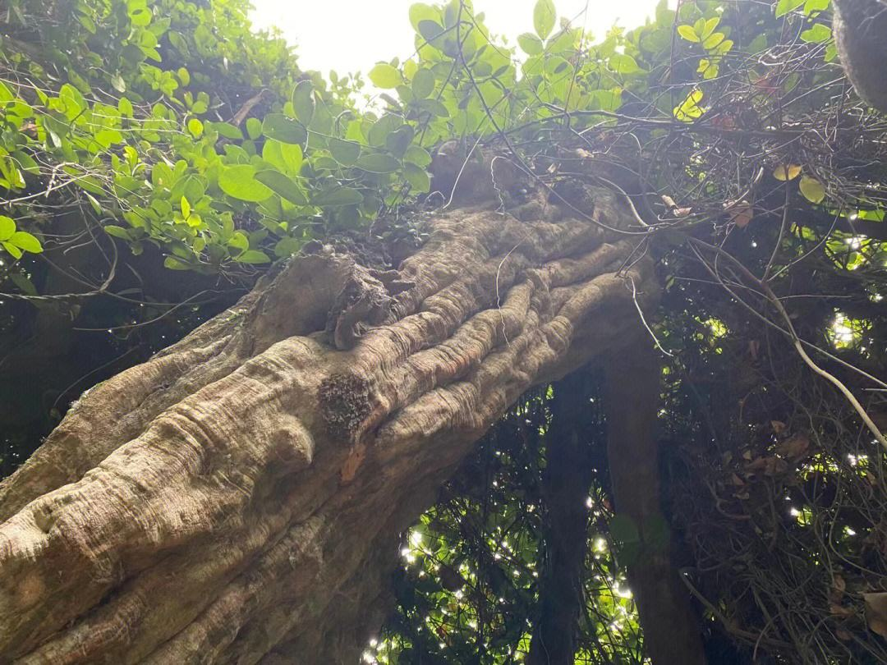
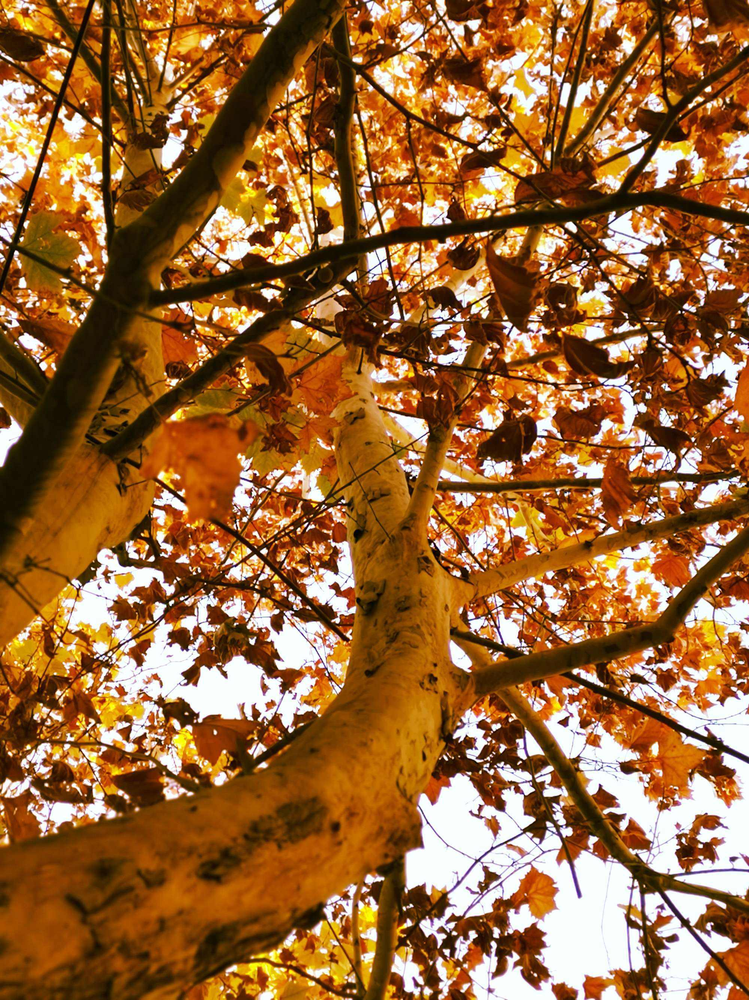

春日照藤花
每个清晨，我都要经过那株古藤 。 那是一株看上去有些岁月了的藤。长长的白廊连通两座教学楼，那藤的根就长在楼前的花坛里。根基处的枝干粗壮虬结，褐色条蔓攀援在白廊上，羽状复叶 层层叠叠摊开翅翼，累累花串悬挂下来，一路芬芳。或许是鲜少沐浴到阳光，藤阴面有些虫蛀 ，两枝有些焦枯，给人一种颓然的感觉。 为那一树淡紫深深沉醉，所以在友人为摄影取景苦恼时，我毫不犹豫地拉她到这一树淡紫下。我在廊下看友人忙碌着，不时地去看她的照片。看得出她很尽心，我于是问她为何偏爱上摄影。 她说，她有个年轻时评弹唱得很好的外婆，偶然看到她的老照片就想学摄影了，这种“捕捉一瞬间的美丽定格成永恒”的事很浪漫。友人边走边拍，不知觉间绕到那藤阴处。“这里照不到阳光挺不入调的。”我如是说，友人却是坦然一笑：“我倒觉得这颓唐正是为了映衬身边的烂漫。就像因为经历了冬天，我们才更喜欢春天。”这话一点不错，但我心上却漫过一种不舒服的感觉，并未细究我和她问起外婆的事并约好下次去拜访。 我曾暗暗期待是否会见到一个极具艺术气息的老人，然而真正见到的时候不免失望。与普通人一样，老人身上有市井的气息，脸上有岁月留下的刻痕。失望 之际，友人把我拉进内室，翻出照片给我看。照片上是个面容姣好的女子对着镜头神态从容地微笑，带着江南 女子特有的淡雅气质。很难把这个灵秀的女子与如今身形稍佝偻的老人联系到一起……一张张照片翻过，有些边角已经泛黄卷曲，但即使是灰白的单色也掩不住那些流光溢彩。 感叹一声，我问：“那你外婆现在还唱评弹么？” 她微微摇头：“外婆在和外公结婚后就再没唱了，很多年了，洗衣做饭带孩子她什么都学会了，唯独丢下了年轻时最爱的评弹 。”听了这话我的心里莫名沉重起来。辞别友人，我兜兜转转竟又回到了古藤的阴处，不经意发现那根处有些许绿意小片地掩盖原本的焦枯。 “我倒觉得这颓唐正是为了映衬身边的烂漫……”盯着那片绿意，醍醐灌顶般，我终于抓住了当时听到这句话后不舒服的缘由。这藤阴本就不是陪衬，而是一种绚烂背后的生命的美丽。永久背对阳光的藤阴做出的是一种奉献，尽管奉献换来的是腐朽不堪的外表和行人不愿驻足的嫌恶。 即使面对阳光也必会投下阴影，所以必须有什么要处在阴暗里。藤阴选择放弃阳光，从土壤汲取养分供给串串藤花以微笑的力量。它为了整株藤树 达到最美，带着疼痛以一种温柔的姿态退居于阴暗。 “春日照藤花，末叶尽舒展。君若能开诚，我亦愿信赖。”这样看来，这古老的诗句似乎别有了深意。 我想起那位老人，这株古藤与那位老人那么相似。当年的她是在一切最美好的时候，带着疼痛，用一种温柔的姿态把爱迫成爱过。她这么做，是为了儿女未来的绚烂，像极了这藤前繁华 ，背后沧桑。 每个清晨，穿过长长的藤架 ，走过绚烂的表象，我带着肃穆的敬意绕到一树繁华的背后，这里有值得驻足的美丽风景。我再次吟起古老的诗音：“春日照藤花，末叶尽舒展。君若能开诚，我亦愿信赖。”
一棵树的姿势
第一眼见到这棵树时，我心头一悚。或者说，我几乎被它给吓倒了。 这是一棵梧桐，没有根的梧桐树。树的主干大约有三、四米干卧在地上，近根的一端已与树根完全断开，只张着鳄鱼 般的大口，内里黑乎乎的，面目狰狞可怖。树表是泥土般的土白，夹杂着土青色的斑痕，坑坑洼洼，伤痕累累，洞眼处留下了虫蚁 蛀蚀的痕迹。 这是一具树的尸体，透着死亡的气息。冬日的午后，阳光处一片惨白。 但是，且慢，如果让目光顺着干卧的树干往前移动，你会诧异地发现，树干的另一端竟然从地上翘了起来，与地面大约呈四十五度角 ，一幅不屈的姿势。这是一棵想独自爬立起来的树！细看去，树干的弯曲处竟探出了几根茎须扎进了泥土，它给自己重新找到了根系，以一种壮士断腕 的决绝勇气，挣扎着从地上爬起。 这是一棵姿势奇异的树：树的一截还躺在地上，被虫蚁蛀蚀，而另一端却倔强地昂起，如一只断尾的蜥蜴 ，昂首张望。 我敬慕地站着，品读一个传奇的生命。 它一定遭过一次意外的灾难，或是狂风，或是暴雨，或是雷电，然后随着一声沉闷的巨响，轰然倒地。躯干与根系完全断裂 ，它躺在地上，已经感觉不到剧痛，死亡正步步走来。 清晨的鸟啼唤醒了它。夜晚过去，它发现还没有死去。但比死亡更痛苦的是，它发现残废的躯体正在被虫蚁日夜啃啮着。有一种蚀骨的痛，直透心肺。它不能抵抗，唯一能做的，就是以生命对抗衰朽。它撕开了自己的皮肤，狠命地向地下去吮吸、去扎根。生命的通道，在一次次撕心裂肺 的痛楚后，逐渐通畅…… 人其实同树一样，或许也会在某个时刻猛不丁地被命运打趴，然后一次次挣扎，一点点爬起。伤口处肿胀的瘀青、刺目的疤痕，只剩下清冷月光的抚慰。但终有一天，这块疮疤在结痂 、蜕皮后，会成为一枚闪亮的勋章。 有一位邻居，曾经常常在小区里遇上。她腆着大肚子，慢慢地踱着步，脸上总是安详地浅笑。她后来生了双胞胎，可其中一个是死胎，另一个出生半个月后被诊断为脑梗死 。有很长一段时间，她没有出门。去看望她，她总是挤出勉强的笑，答应会好好活下去，但声音轻飘飘地，如清烟般很快被风吹散。再后来，她辞职了，一心照料着孩子，每天带孩子去医院做费用昂贵的康复训练 。近些日，又在小区里常常看到她，扶着孩子一次次地训练他往前走。她又恢复了之前爽朗的笑，并说在医院里结识了一些年轻妈妈，准备成立一个康复协会，为更多的残疾儿家属提供帮助。我很庆幸，她凭借着自己的力量终于走过了那段绝望、冷寂的日子。 人生中不变的就是它的“变”，噩运总在每一个晴好的日子后时刻偷窥。而当不幸降临后，我们需要一段心理缓冲期，然后寻找生命的站立位置，正如眼前这棵梧桐，经历了种种磨难后，以一种奇异的姿势，半躺半站。 在这片干净而温暖的冬阳下 ，一棵树跪立向上，周围的树挺拔不语，有一种肃穆的氛围弥散开来。 生命 的深处，不必同情，无须悲欢。
最后是可爱的安宝